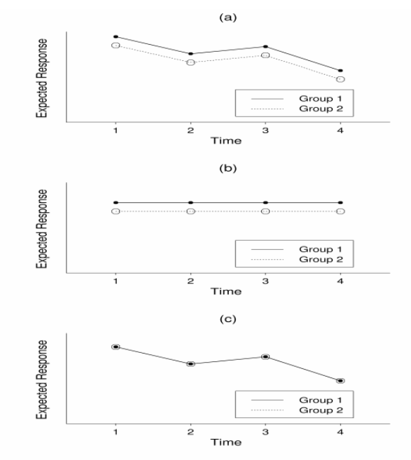
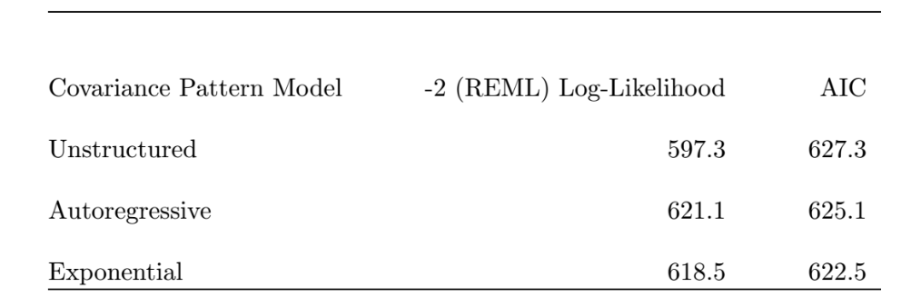
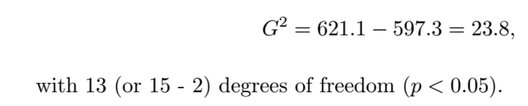
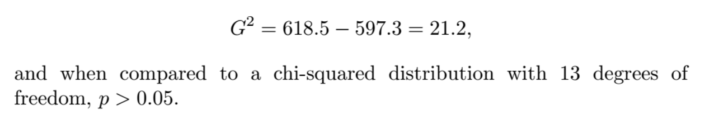

Lecture 7: Modeling the mean and covariance with longitudinal data
PHS 651: Advanced regression methods
Mary Ryan Baumann, PhD
October 22 & 24, 2024
Recording disclosure
This class is being conducted in person, as well as over Zoom. As the instructor, I will be recording this session. I have disabled the recording feature for others so that no one else will be able to record this session. I will be posting this session to the course’s website.
If you have privacy concerns and do not wish to appear in the recording, you may turn video off (click “stop video”) so that Zoom does not record you.
The chat box is always open for discussion and questions to the entire class. You may also send messages privately to the instructor. Please note that Zoom saves all chat transcripts.
Slides found at: https://maryryan.github.io/PHS-651-slides/PHS-651-7/slides-7
Recall: longitudinal data
Longitudinal data occur when a research participant is observed repeatedly through time
- Primary goal of longitudinal data collection is to characterize change in response over time and how factors/exposures impact that change
What’s wrong with a cross-sectional study?
Just asking a different kind of question!
Only observe how exposure impacts outcome at a particular moment
-
No understanding of whether outcome changed while exposure was applied or whether it was always low/high
- Correlation vs causation
Can maybe get at between-subject differences, but not within-subject change
Modeling the mean with repeated measures
When dealing with non-longitudinal data, we (usually) have one primary type of research question for our models: “How does the outcome differ in exposure and non-exposure groups?”
- With longitudinal data, we may also be interested in a research question like this
However, we need to be more specific about how we’re comparing the outcome in the exposure groups
Differences in outcome at last measurement time?
Differences in the outcome change from baseline?
Differences in outcome trend over time?
Understanding how we want to compare outcomes between the exposure groups will help us understand what our reference groups are
Longitudinal hypotheses

With longitudinal data, we are usually interested one of several types of hypotheses:
Presence/absence of time effect
Presence/absence of group/exposure effect
Presence/absence of exposure group-by-time interaction effect
How do each of these 3 hypotheses match up to the 3 plots?
How do create a mean model each of these hypotheses?
Hypothesis 1: Time effect
Longitudinal data repeatedly observes the outcome in an individual
Along with the outcome measurements, we also observe the timing of these measurements
Timing can be measured categorically (e.g., “visit 1, visit 2…”) or numerically (e.g., number of days since study entry)
One of the most basic ways we might analyze longitudinal data is to try to model how the outcome changes over time across the entire study population (not looking at exposure groups)
How might we model this?
Hypothesis 1: Categorical time
One of the most basic ways we might analyze longitudinal data is to try to model how the outcome changes over time across the entire study population (not looking at exposure groups)
Say we observe the outcome in an individual i across J measurement occasions: \(Y_{ij}\)
One representation:
\[E[Y_{ij}] = \beta_0 I(\text{Baseline}_i) + \beta_1 I(\text{Visit 1}_i) + \beta_2 I(\text{Visit 2}_i) + \dots \beta_J I(\text{Visit J}_i),\]
where \(I(\cdot)\) is an indicator function/dummy variable
-
Each \(\beta\) represents the average outcome at a particular categorical time point
- If \(\beta_0 = \beta_1 = \dots = \beta_J\), the outcome is not changing across time
Hypothesis 1: Categorical time
Say we observe the outcome in an individual i across J measurement occasions: \(Y_{ij}\)
An alternative representation:
\[E[Y_{ij}] = \beta_0 + \beta_1 I(\text{Visit 1}_i) + \beta_2 I(\text{Visit 2}_i) + \dots \beta_J I(\text{Visit J}_i)\]
\(\beta_0\) represents the average outcome at baseline
-
All other regression coefficients represent the difference in average outcomes between a particular categorical time point and baseline
- If \(\beta_1 = \dots = \beta_J = 0\), the outcome is not changing across time
Neither representation makes an assumption about how outcomes change (or don’t) from time point to time point
- Could increase, then decrease, then increase slightly, then increase even more, etc
Both representations assume that “visits” are happening at the same time for everyone (or are at least at comparable times)
No sense of “distance” between visits
What if this is not true?
Hypothesis 1: Numerical time
Say we observe the outcome in an individual i across J measurement occasions: \(Y_{ij}\)
If we let \(\text{Time}_{ij}\) represent the exact time since study entry that participant i is observed for visit j, we could model as:
\[E[Y_{ij}] = \beta_0 + \beta_1 (\text{Time}_{ij})\]
\(\beta_0\) represents the average outcome at baseline (0 time since study entry)
-
\(\beta_1\) represents average difference in outcomes comparing measurements 1 time unit apart
If \(\beta_1 = 0\), the outcome is not changing across time
Like a weighted average of the categorical time effects we saw before
Hypothesis 1: Numerical time
If we let \(\text{Time}_{ij}\) represent the exact time since study entry that participant i is observed for visit j, could model as:
\[E[Y_{ij}] = \beta_0 + \beta_1 (\text{Time}_{ij})\]
\(\beta_0\) represents the average outcome at baseline (0 time since study entry)
\(\beta_1\) represents average difference in outcomes comparing measurements 1 time unit apart
This makes strong assumption that the outcome is linearly associated with time
- Will see same change in outcome whether we’re comparing outcomes at Baseline vs week 1 or at week 10 vs week 11
-
Could alter this assumption by adding polynomial time effects:
- e.g., Quadratic time effect: \(E[Y_{ij}] = \beta_0 + \beta_1 (\text{Time}_{ij}) + \beta_2 (\text{Time}_{ij})^2\)
Makes no assumption about timing of observations across participants/clusters
- “Smooths out” timing irregularities
Hypothesis 2: Group/exposure effect
Now we might want to compare outcomes between exposure groups
- Let \(U_{i0}\) be an exposure indicator for participant i, collected at baseline
How might we model this?
Hypothesis 2: Group/exposure effect
Now we might want to compare outcomes between exposure groups
- Let \(U_{i0}\) be an exposure indicator for participant i, collected at baseline
For illustration, assume we want to fit a linear effect for numerically-observed time:
\[E[Y_{ij}] = \beta_0 + \beta_1 (U_{i0}) + \beta_2 (\text{Time}_{ij})\]
\(\beta_0\) represents the average outcome at baseline (0 time since study entry) in the unexposed group
-
\(\beta_1\) represents the average difference in outcomes between the exposed and unexposed groups, conditional on measurement time
- If \(\beta_1 = 0\), there is no difference in (similarly-timed) outcomes between exposure groups
Hypothesis 2: Group/exposure effect
We could generalize this to let exposure group membership change with time: \(U_{ij}\)
\[E[Y_{ij}] = \beta_0 + \beta_1 (U_{ij}) + \beta_2 (\text{Time}_{ij})\]
-
We must be extra careful here with our interpretation of \(\beta_1\)
- \(\beta_1\) only maintains its causal interpretation if \(U_{i(j+1)}\) is not predicted by \(Y_{ij}\) give \(U_{ij}\); otherwise, we say that \(Y_{ij}\) confounds the relationship between \(Y_{i(j+1)}\) and \(U_{i(j+1)}\)
Both representations assume that the effect of exposure is constant across time
Doesn’t matter if comparing exposed/unexposed at Week 1 or Week 24
What if this is not true?
Hypothesis 3: Exposure group \(\times\) time effect
Now we might want to compare change in outcomes over time between exposure groups
- Let \(U_{i0}\) be an exposure indicator for participant i collected at baseline, and assume we want to fit a linear effect for numerically-observed time:
\[E[Y_{ij}] = \beta_0 + \beta_1 (U_{i0}) + \beta_2 (\text{Time}_{ij}) + \beta_3 (U_{i0} \times\text{Time}_{ij})\]
What do the regression coefficients represent?
\(\beta_0\):
\(\beta_1\):
\(\beta_2\):
\((\beta_1 + \beta_3)\):
\((\beta_2 + \beta_3)\):
\(\beta_3\):
Hypothesis 3: Exposure group \(\times\) time effect
Now we might want to compare change in outcomes over time between exposure groups
- Let \(U_{i0}\) be an exposure indicator for participant i collected at baseline, and assume we want to fit a linear effect for numerically-observed time:
\[E[Y_{ij}] = \beta_0 + \beta_1 (U_{i0}) + \beta_2 (\text{Time}_{ij}) + \beta_3 (U_{i0} \times\text{Time}_{ij})\]
\(\beta_0\): average outcome at baseline (0 time since study entry) in the unexposed group
\(\beta_1\): average difference in outcomes between the exposed and unexposed groups at baseline
\(\beta_2\): average difference in outcomes comparing unexposed measurements 1 time unit apart
\((\beta_1 + \beta_3)\): difference in outcomes between exposed and unexposed groups at the same measurement time
\((\beta_2 + \beta_3)\): average difference in outcomes comparing exposed measurements 1 time unit apart
\(\beta_3\): whether exposure effect changes with time
Hypothesis 3: Exposure group \(\times\) time effect
Now we might want to compare change in outcomes over time between exposure groups
- Let \(U_{i0}\) be an exposure indicator for participant i collected at baseline, and assume we want to fit a linear effect for numerically-observed time:
\[E[Y_{ij}] = \beta_0 + \beta_1 (U_{i0}) + \beta_2 (\text{Time}_{ij}) + \beta_3 (U_{i0} \times\text{Time}_{ij})\]
If we were dealing with categorical time, would need to interact exposure variable with each time point indicator
Adjusting for baseline outcomes
But what do we do when there are differences in outcomes between exposure groups at baseline?
There are 4 main methods for handling baseline outcome measurements in longitudinal data
- Keep \(Y_{i0}\) as part of the outcome vector, and use exposure group and time (and group-by-time interaction) as adjustment variables
\[E[Y_{ij}] = \beta_0 + \beta_1 (\text{U}_{i0}) + \beta_2(\text{Time}_{ij}) + \beta_3(\text{U}_{i0} \times \text{Time}_{ij})\]
- \(\beta_1\) interpreted as expected difference in outcome between exposure groups at baseline
Adjusting for baseline outcomes
- Keep \(Y_{i0}\) as part of the outcome vector, and use time and group-by-time interaction as adjustment variables (no group variable)
\[E[Y_{ij}] = \beta_0 + \beta_2(\text{Time}_{ij}) + \beta_3(\text{U}_{i0} \times \text{Time}_{ij})\]
Assumes group means at baseline are equal (\(\beta_1=0\))
This is a bad assumption for observational studies, but usually fine for randomized trials
Adjusting for baseline outcomes
- Use change from baseline \((Y_{ij} - Y_{i0})\) as outcome, and use exposure and time (and group-by-time interaction) as adjustment variables
\[E[Y_{ij} - Y_{i0}] = \beta_0 + \beta_1 (\text{U}_{i0}) + \beta_2(\text{Time}_{ij}) + \beta_3(\text{U}_{i0} \times \text{Time}_{ij})\]
\((\beta_1 + \beta_3)\) interpreted as expected difference in the change-from-baseline outcomes between exposure groups at same follow-up time (conditional on follow-up time)
\(\beta_0\) only meaningful if choose another reference time besides baseline (because change from baseline at time 0 is 0 for everyone)
Adjusting for baseline outcomes
- Use follow-up measurements only as outcome vector, and use \(Y_{i0}\) as adjustment variable, along with exposure and time (and group-by-time interaction)
\[E[Y^*_{ij}] = \beta_0 + \beta_{\text{baseline}}(Y_{i0}) + \beta_1 (\text{U}_{i0}) + \beta_2(\text{Time}_{ij}) + \beta_3(\text{U}_{i0} \times \text{Time}_{ij})\]
\((\beta_1 + \beta_3)\) interpreted as expected difference in outcome between exposure groups at same follow-up time, who had the same baseline outcomes
\(\beta_0\) only meaningful if choose another reference time besides baseline
Assumes group means at baseline are equal (no baseline-by-group effect) \(\rightarrow\) bad assumption for observational studies
Longitudinal covariance/correlation structures
Now that we have time handled in the mean model, we can think about how longitudinal data affects covariance/correlation structures
Previously we touched on some basic correlation structures for clustered, non-longitudinal data
- Remember: independence, exchangeable, unstructured from Lectures 4 and 5.1
With longitudinal data, there are a much wider range of potential structures
- We’ll explore some of those today
Longitudinal covariance/correlation structures
As an illustration, we’ll use data are from a study of dental growth measurements
- Distance (mm) from the center of the pituitary gland to the pteryomaxillary fissure were obtained on 11 girls and 16 boys at ages 8, 10, 12, and 14
Rows: 27
Columns: 6
$ ID <int> 1, 2, 3, 4, 5, 6, 7, 8, 9, 10, 11, 12, 13, 14, 15, 16, 17, 18, …
$ Gender <chr> "F", "F", "F", "F", "F", "F", "F", "F", "F", "F", "F", "M", "M"…
$ age8 <dbl> 21.0, 21.0, 20.5, 23.5, 21.5, 20.0, 21.5, 23.0, 20.0, 16.5, 24.…
$ age10 <dbl> 20.0, 21.5, 24.0, 24.5, 23.0, 21.0, 22.5, 23.0, 21.0, 19.0, 25.…
$ age12 <dbl> 21.5, 24.0, 24.5, 25.0, 22.5, 21.0, 23.0, 23.5, 22.0, 19.0, 28.…
$ age14 <dbl> 23.0, 25.5, 26.0, 26.5, 23.5, 22.5, 25.0, 24.0, 21.5, 19.5, 28.…Unstructured covariance/correlation
Let’s look at what the “raw” covariance matrix for this data looks like:
age8 age10 age14
age8 5.925926 3.285256 4.039886
age10 3.285256 4.653846 4.532051
age14 4.039886 4.532051 7.654558and the “raw” correlation matrix:
# A tibble: 3 × 4
term age8 age10 age14
<chr> <dbl> <dbl> <dbl>
1 age8 1 0.626 0.600
2 age10 0.626 1 0.759
3 age14 0.600 0.759 1 What do we see?
Unstructured covariance/correlation
Let’s look at what the “raw” covariance matrix for this data looks like:
age8 age10 age14
age8 5.925926 3.285256 4.039886
age10 3.285256 4.653846 4.532051
age14 4.039886 4.532051 7.654558and the “raw” correlation matrix:
# A tibble: 3 × 4
term age8 age10 age14
<chr> <dbl> <dbl> <dbl>
1 age8 1 0.626 0.600
2 age10 0.626 1 0.759
3 age14 0.600 0.759 1 Using an unstructured correlation/covariance structure gives us the most flexibility/robustness because we make no assumptions about what patterns we should be seeing
But…
-
only appropriate when data is balanced
- How would we event create the covariance matrix if measurement times aren’t standardized?
hard to estimate when there are lots of measurement visits/occasions
In these cases, it is often helpful to impose a structure on the covariance/correlation
Covariance Pattern Models
When attempting to impose some structure on the covariance, a subtle balance needs to be struck
Too little structure means too many parameters to estimate, which means imprecise point estimate (large variance)
-
Too much structure means more opportunity for mis-specification, which means inaccurate point estimate (large bias)
- Classic trade-off between bias and variance
Covariance pattern models have their basis in models for serial correlation originally developed for time series data
Exchangeable correlation/compound symmetry
Compound symmetry/exchangeable correlation assumes:
Correlation is the same across all observations in the cluster
We saw this one before in lectures 2, 4, and 5.1!
\[\begin{bmatrix} 1 & \alpha & \dots & \alpha\\ \alpha & \ddots & \dots & \alpha\\ \vdots & \dots & \ddots & \vdots\\ \alpha & \dots & \alpha & 1 \end{bmatrix}\]
You’ll always be estimating a single correlation \(\alpha\), regardless of cluster size \(n\)
This pattern has strong assumptions (measurements are exchangeable)
- This may not be valid with longitudinal data
Toeplitz correlation
Toeplitz assumes:
-
Correlation is different between each observation
- The correlation between two observations depends only on the number of time points separating them
\[\begin{bmatrix} 1 & \alpha_1 & \dots & \alpha_{n-1}\\ \alpha_1 & \ddots & \dots & \alpha_{n-2}\\ \vdots & \dots & \ddots & \vdots\\ \alpha_{n-1} & \dots & \alpha_1 & 1 \end{bmatrix}\]
You’ll be estimating \((n-1)\) correlation paramteres
Only appropriate when measurements are (approximately) equally spaced!!
Autoregressive correlation
An autoregressive structure assumes:
- Correlation gradually decreases as the distance between observations grows
\[\begin{bmatrix} 1 & \alpha^1 & \dots & \alpha^{n-1}\\ \alpha^1 & \ddots & \dots & \alpha^{n-2}\\ \vdots & \dots & \ddots & \vdots\\ \alpha^{n-1} & \dots & \alpha^1 & 1 \end{bmatrix}\]
You’ll always be estimating a single correlation \(\alpha\), regardless of \(n\)
Means less correlation for measurements taken farther apart; but only appropriate when the measurements are (approximately) equally spaced
Covariance matrices
To get the covariance matrix under any of these patters, we multiply them by the outcome variance, \(\sigma^2\):
\[\sigma^2\begin{bmatrix} 1 & \alpha & \dots & \alpha\\ \alpha & \ddots & \dots & \alpha\\ \vdots & \dots & \ddots & \vdots\\ \alpha & \dots & \alpha & 1 \end{bmatrix} ~~~~~~\sigma^2 \begin{bmatrix} 1 & \alpha_1 & \dots & \alpha_{n-1}\\ \alpha_1 & \ddots & \dots & \alpha_{n-2}\\ \vdots & \dots & \ddots & \vdots\\ \alpha_{n-1} & \dots & \alpha_1 & 1 \end{bmatrix} ~~~~~~\sigma^2 \begin{bmatrix} 1 & \alpha^1 & \dots & \alpha^{n-1}\\ \alpha^1 & \ddots & \dots & \alpha^{n-2}\\ \vdots & \dots & \ddots & \vdots\\ \alpha^{n-1} & \dots & \alpha^1 & 1 \end{bmatrix}\]
If we wanted to consider variances that vary across time, \(Var[Y_{ij}] = \sigma^2_j\), we could do that as well
These are called heterogeneous covariance patterns
Example - heterogeneous compound symmetry covariance pattern:
\[\begin{bmatrix} \sigma^2_1 & \alpha\sigma_1\sigma_2 & \dots & \alpha\sigma_1\sigma_n\\ \alpha\sigma_1\sigma_2 & \ddots & \dots & \alpha\sigma_2\sigma_n\\ \vdots & \dots & \ddots & \vdots\\ \alpha\sigma_1\sigma_n & \dots & \alpha\sigma_n\sigma_{n-1} & \sigma^2_n \end{bmatrix}\]
Unevenly timed observations
All the structures we’ve looked at so far have assumed that our observed times points are approximately equally spaced
- This is appropriate when we have a lot of control in observation timing…
… But it’s not uncommon to have observation time points that aren’t always evenly spaced!
- Think of a study where you start out with weekly observations, then move to monthly, then annual
How do we handle this?
Exponential correlation
When measurement occasions are not equally-spaced over time, we can the autoregressive model can be generalized
- Let \(\{t_{i1}, t_{i2}, \dots, t_{in_i}\}\) denote the observation times for the ith individual
-
The correlations are given by: \[Corr(Y_{ij}, Y_{ik}) = \alpha^{|t_{ij} - t_{ik}|}\]
- Instead of looking at the how far apart the observation numbers are (e.g., visit 1 vs visit 2), it looks at the actual distance between the observation times
This structure is invariant under linear transformation of the time scale
Unlike the Toeplitz and autoregression structures, the exponential structure can easily handle unbalanced data because it is based on time as a continuum
Banded correlation
All of the previous structures have have required us to estimate some parameter for the off-diagonal matrix elements
- What if we know at some point the correlation between observations will go to 0? Enter the banded structure!
The banded structure assumes correlation is 0 beyond some specified interval
It is possible to apply a banded pattern to any of the correlation pattern models considered so far
A banded Toeplitz structure with a band size of 3 looks like:
\[\begin{bmatrix} 1 & \alpha_1 & \alpha_2 & 0 & \dots & 0\\ \alpha_1 & 1 & \alpha_1 & \ddots & \dots & 0\\ \alpha_2 & \alpha_1 & 1 &\ddots & \dots & 0\\ 0 & \alpha_2 & \alpha_1& \ddots & \dots & 0\\ \vdots && \dots && \ddots & \vdots\\ 0 && \dots &\alpha_2 & \alpha_1 & 1 \end{bmatrix}\]
Banded correlation
All of the previous structures have have required us to estimate some parameter for the off-diagonal matrix elements
- What if we know at some point the correlation between observations will go to 0? Enter the banded structure!
The banded structure assumes correlation is 0 beyond some specified interval
It is possible to apply a banded pattern to any of the correlation pattern models considered so far
A banded autoregression structure with a band size of 4 looks like: \[\begin{bmatrix} 1 & \alpha^1 & \alpha^2 & \alpha^3 & 0 & \dots & 0\\ \alpha^1 & 1 & \alpha^1 & \alpha^2& \ddots & \dots & 0\\ \alpha^2 & \alpha^1 & 1 & \alpha^1&\ddots & \dots & 0\\ \alpha^3 & \alpha^2 & \alpha^1 & 1& \ddots & \dots & 0\\ \vdots && \dots && \ddots && \vdots\\ 0 && \dots & \alpha^3&\alpha^2 & \alpha^1 & 1 \end{bmatrix}\]
Banded correlation
All of the previous structures have have required us to estimate some parameter for the off-diagonal matrix elements
- What if we know at some point the correlation between observations will go to 0? Enter the banded structure!
The banded structure assumes correlation is 0 beyond some specified interval
It is possible to apply a banded pattern to any of the correlation pattern models considered so far
A banded exponential structure with a band size of 4 looks like: \[\begin{bmatrix} 1 & \alpha^{|t_{i1}-t_{i2}|} & \alpha^{|t_{i1}-t_{i3}|} & \alpha^{|t_{i1}-t_{i4}|} & 0 & \dots & 0\\ \alpha^{|t_{i1}-t_{i2}|} & 1 & \alpha^{|t_{i1}-t_{i2}|} & \alpha^2& \ddots & \dots & 0\\ \alpha^{|t_{i1}-t_{i3}|} & \alpha^{|t_{i1}-t_{i2}|} & 1 & \alpha^{|t_{i1}-t_{i2}|} &\ddots & \dots & 0\\ \alpha^{|t_{i1}-t_{i4}|} & \alpha^{|t_{i1}-t_{i3}|} & \alpha^{|t_{i1}-t_{i2}|} & 1& \ddots & \dots & 0\\ \vdots && \dots && \ddots && \vdots\\ 0 && \dots & \alpha^{|t_{i1}-t_{i4}|}&\alpha^{|t_{i1}-t_{i3}|} & \alpha^{|t_{i1}-t_{i2}|} & 1 \end{bmatrix}\]
Choices, choices
With way more structures to choose from, it may be more difficult to make a decision than it was with non-longitudinal data
Choice of model for covariance should be based on a “maximal” model for the mean that minimizes any potential misspecification
Maximal mean model should be in a certain sense the most elaborate model for the mean response that we would consider from a subject-matter point of view
Once maximal model has been chosen, residual variation and covariation can be used to select appropriate model for covariance
- For nested covariance pattern models, a likelihood ratio test statistic can be constructed that compares “full” and “reduced” models
Covariance pattern likelihood ratio test
For example, compound symmetry model is special case of the Toeplitz model with \[\rho_1 = \rho_2 =\dots =\rho_{n-1}\]
Likelihood ratio test is obtained by taking twice the difference in the respective maximized REML log-likelihoods, \[G^2 = 2(\hat{l}_{full} - \hat{l}_{reduced})\] and comparing statistic to a chi-squared distribution with degrees-of-freedom equal to difference between the number of covariance parameters in full and reduced models
- “Full” here would be the most complicated covariance structure, while reduced would be a simpler one
Covariance pattern AIC
To compare non-nested model, an alternative approach is the Akaike Information Criterion (AIC)
- According to the AIC, given a set of competing models for the covariance, one should select the model that minimizes
\[AIC = -2(\text{maximized log-likelihood}) + 2(\text{number of parameters})\]
Note that models receive a pentality for having a larger number of parameters
Example: Exercise Therapy Trial
Subjects were assigned to one of two weightlifting programs to increase muscle strength
Treatment 1: number of repetitions of the exercises was increased as subjects became stronger
Treatment 2: number of repetitions was held constant but amount of weight was increased as subjects became stronger
Measurements of body strength were taken at baseline and on days 2, 4, 6, 8, 10, and 12
- We’ll focus only on measures of strength obtained at baseline (or day 0) and on days 4, 6, 8, and 12
Example: Exercise Therapy Trial
What do we observe?
- Covariance matrix:
day0 day4 day6 day8 day12
day0 9.866366 10.47857 9.154762 10.21747 9.441379
day4 10.478571 12.70714 11.072269 12.54451 11.227586
day6 9.154762 11.07227 10.478571 10.69318 10.357143
day8 10.217469 12.54451 10.693182 13.74332 12.317460
day12 9.441379 11.22759 10.357143 12.31746 13.613793- Correlation matrix:
# A tibble: 5 × 6
term day0 day4 day6 day8 day12
<chr> <dbl> <dbl> <dbl> <dbl> <dbl>
1 day0 1 0.926 0.896 0.865 0.821
2 day4 0.926 1 0.959 0.953 0.904
3 day6 0.896 0.959 1 0.957 0.905
4 day8 0.865 0.953 0.957 1 0.944
5 day12 0.821 0.904 0.905 0.944 1 Example: Exercise Therapy Trial
Let’s compare what model fit would look like using an unstructured, autoregressive, and exponential covariance model for the mean model:
\[E[\text{body strength}_{ij}] = \beta_0 + \beta_1(\text{Program}_i) + \beta_2(\text{Time}_{ij}) + \beta_3(\text{Program}_i \times \text{Time}_{ij})\]

There is a hierarchy among the models: autoregressive and exponential are both nested within unstructured
The autoregressive and exponential models are not nested but have the same number of parameters
Example: Exercise Therapy Trial
LRT comparing autoregressive vs unstructured covariance:

- There is evidence that the autoregressive model does not provide an adequate fit to the covariance
Example: Exercise Therapy Trial
LRT comparing exponential vs unstructured covariance:

Exponential covariance provides an adequate fit to the data
Also, in terms of AIC, the exponential model minimizes this criterion